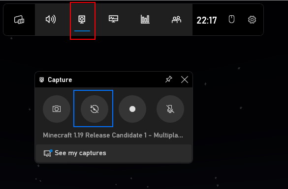

Throughout your time on the server, you may have moments you want to relive forever and ever! Luckily, most people feel the same! So there are lots of options out there for capturing and sharing your favourite moments easily in #moments! Some options, as well as which one you should choose, are listed below:
Choosing a solution:
You will have to make a decision on what solution to use. The following may help you decide:
Xbox Game Bar - Built into windows, very easy to set up, but very unreliable. Audio is often bad sounding, or missing from clips, even when settings indicate audio should be included. Unavailable on other Operating Systems.
Medal - Way more reliable than Xbox Game Bar, but far more intrusive. It's intrusiveness can be mitigated through settings (detailed below), but you will need to sign up. Available for Windows and Mac OS.
OBS Studio - Much more involved set up process, but far more flexible and reliable, and available on all Operating Systems.
If you want the best ease of use to clip quality ratio, go with Medal. If you like flexibility, or are on an alternative platform, go with OBS Studio. And finally, if you object to creating a Medal account, and are uncomfortable setting up OBS, go with Xbox Game Bar.
Instant Replay:
These instructions will focus on how to set up software for clipping the previous moment.
Install medal from here, and go through the setup process. Once you land in the application, come back to these instructions.
Head to the settings, and click "Recorder" (highlighted in red). Then, in the "Quality and Length" (highlighted in green) section, set your resolution to "Full HD (1080p)" (or High if this option is not available), set "FPS" to 60, and ensure "Length" is set to "30 seconds". Then under "Capture Folder Location," (highlighted in blue) change the output folder. I would reccommend creating a folder in your default Video directory, called "Medal" and using that, but this folder can be anywhere you like.
Scroll to the bottom of the "Recorder" settings, under "Other | Recording," disable "Recorder Sound Alerts" (highlighted in red), and under "Publishing" set "Auto Uploads" (highlighted in green) to "Never."
Under the "Notifications" tab in Settings (highlighted in red), disable all 3 items in the "Desktop" section (highlighted in green).
Under the "General" tab in Settings (highlighted in green), in the "Application Settings" section (highlighted in red), enable "Start Minimized", and disable "Automatically Focus Medal."
Now, restart your PC, and your all set up for clipping the previous moment! You can clip the previous moment by pressing F8, and the clip will appear in a sub folder of the folder you specified in the previous step, called "Clips", and you should never have to open the Medal app again.
Go to settings, then output (highlighted in red), and check "Enable Replay Buffer" (highlighted in green), and change your "Maximum Replay Time" (highlighted in orange) to 30 seconds. Then hit apply.
Also under settings, under "Hotkeys" (highlighted in green), search for "replay", and give "Start Replay Buffer" and "Stop Replay Buffer" (highlighted in yellow) a hotkey (probably the same hotkey). In this case, I've assined ALT+SHIFT+S. Then, give "Save Replay Buffer" (highlighted in red) a different hot key, I've assigned CTRL+SHIFT+S. Then hit apply.
In the "Sources" pane (highlighted in green), Right click, then Add > Game Capture. In the window that pops up, name the source "Minecraft" and add press "Ok".
Change the "Mode" option (highlighted in green) to "Capture specific window." Then under the "Window" dropdown, select the window that corresponds to your Minecraft window. Mine is highlighted in blue. Then press "Ok."
The game should now be visible in the Scene Preview. It is likely that it will not fit perfectly in the scene, so if neccessary, resize the game capture using the red boxes at the corner of the capture, and click and drag the capture to centre within the preview. Pictured below is my Game Capture after being resized and centered in the scene preview.
When you start the game, press your "Start Replay Buffer" hotkey. This will start recording ready for saving Instant Replay clips. When you want to save a clip, hit your "Save Replay Buffer" hotkey. Your clip will be saved in the default Video directory for your OS (Videos folder in Windows, home/user/Videos in Linux, Movies folder in Mac OS). Then when your done playing, hit the "Stop Replay Buffer" hotkey.
You can now upload your clips. If it exceeds the Non-nitro Discord file size limit (they probably will), check the tips section for how to compress them easily!
With Minecraft open, press Win+G to open the Windows Game Bar. Then click the "Captures" icon (highlighted in red), and then the "Record the last 30 seconds" icon, and enable all the features required that pop up (if they pop up). Also, click the microphone icon (highlighted in pink), so that it does not have a strike through the icon.

Also in the Game Bar, press the settings icon (highlighted in blue), under "Capturing" (highlighted in red), Make sure "Record in the background while I'm playing a game" (highlighted in orange) is checked and "Show microphone recording notifications" (highlighted in pink) is unchecked. Then, change the "Audio to record" option to "All" (highlighted in green). This ensures that audio other than Minecraft, such as a Discord call gets included in the clip.
Now, when in game, to capture a clip, press Win+Alt+G to save a clip of the last 30 seconds. Clips are saved in Videos/Captures.
You can now upload your clips. If it exceeds the Non-nitro Discord file size limit (they probably will), check the tips section for how to compress them easily!
Recording:
You may find yourself wanting to record entire sessions, rather than the previous moment, or start recording in preparation of a big moment. So here are some solutions for that:
Medal
If you have "Enable Long Press to start Recording" enabled (found in the "Special Features" section of the "Recorder" settings), and followed the setup instructions for Instant Replay, you can start recording at any time by long pressing F8, and long pressing F8 to end the recording.
OBS
For OBS, in the same hotkey menu, give a hotkey for "Start Recording" and "Stop Recording." As long as you followed the steps for setting up Instant Replay, you can use this alternate hotkey to record the entire session. Recordings will be saved to the same place as Instant Replays.
Xbox Game Bar
If you have followed the instructions for setting up Instant Replay, you can use the Win+Alt+R hotkey, in order to start recording your game session. Recordings will be saved to the same place as Instant Replays.
Replay Mod is a Fabric mod, which records your sessions from in game. Players can use the in game editor, to reposition the camera anywhere in the scene, as well as other cool effects! An example of the kinds of videos you can create using the Replay mod can be seen in the Bits+ Announcement Trailer.
It's installation and usage is pretty involved, and the mod is very resource intensive (allocate as much RAM as possible to Minecraft if you choose to use it). So its use is not for the faint of heart. But if you are totally comitted to becoming the next big Minecraft content creator, give it a look!
Documentation, as well as a download link can be found here
Tips
There is a cinematic camera mode in Minecraft, but it is not given a key bind by default. To give it one, go to Options > Controls > Key Binds and give Toggle Cinematic Camera a key! When enabled, your camera will have smooth movement, useful for recording!
If your clip came out above the 8MB non-nitro sharing limit, you can use veed.io to compress your clip to within the 8MB limit. Upload your clip, and lower the "compression" slider until the estimated file size is 8MB max.
If your clip is very long, or a drop in quality from compressing the clip is unacceptable to you, you can also upload your clip to YouTube as an unlisted video, and share a link instead!